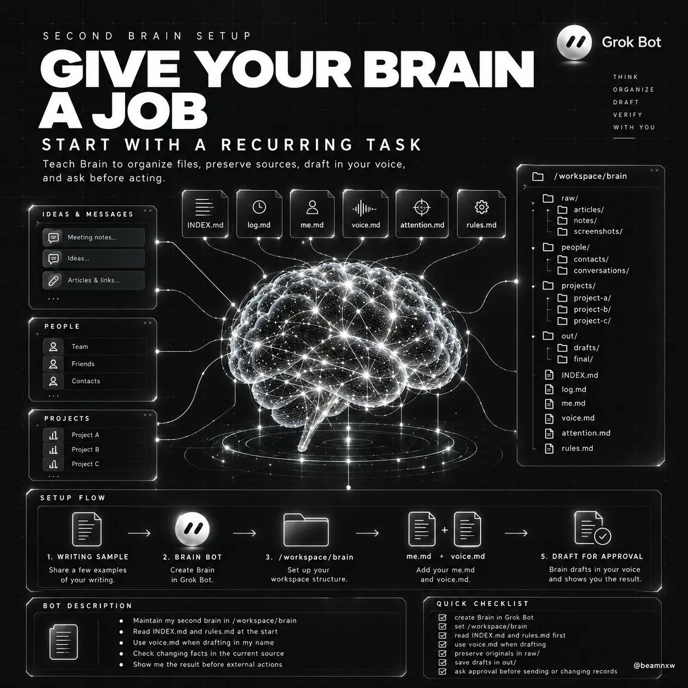
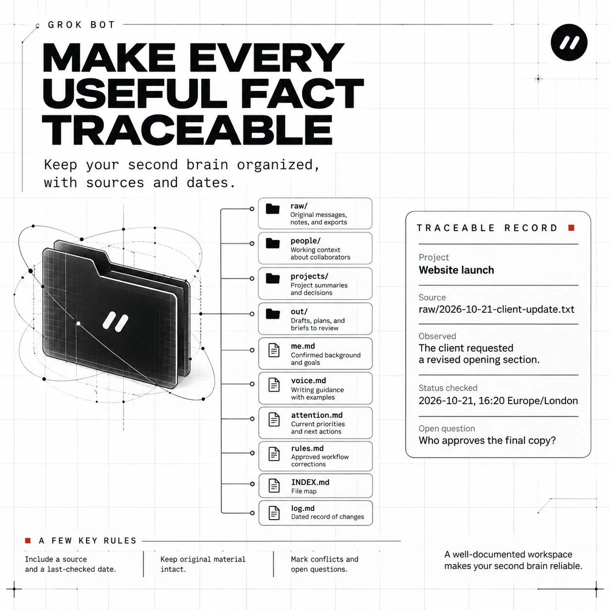
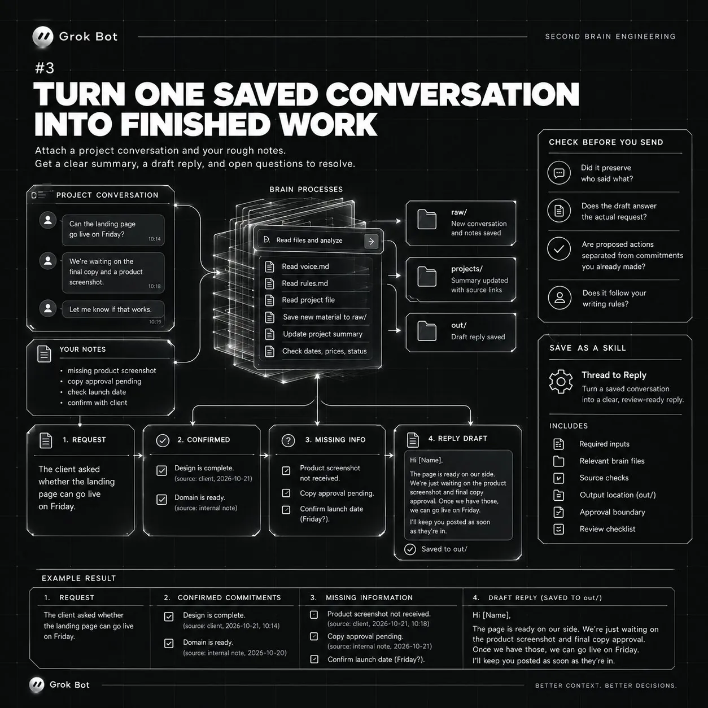
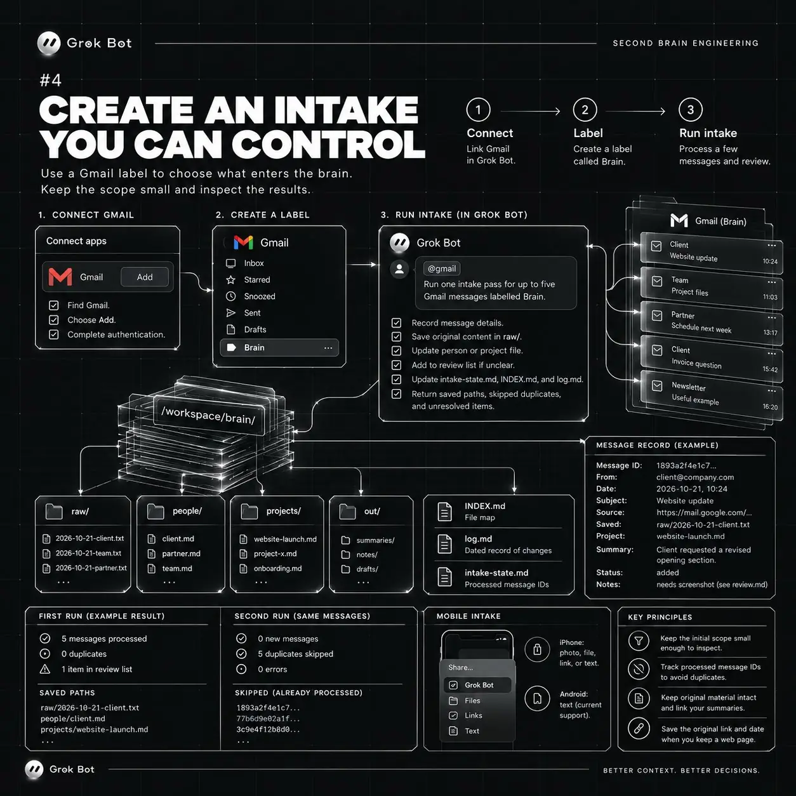
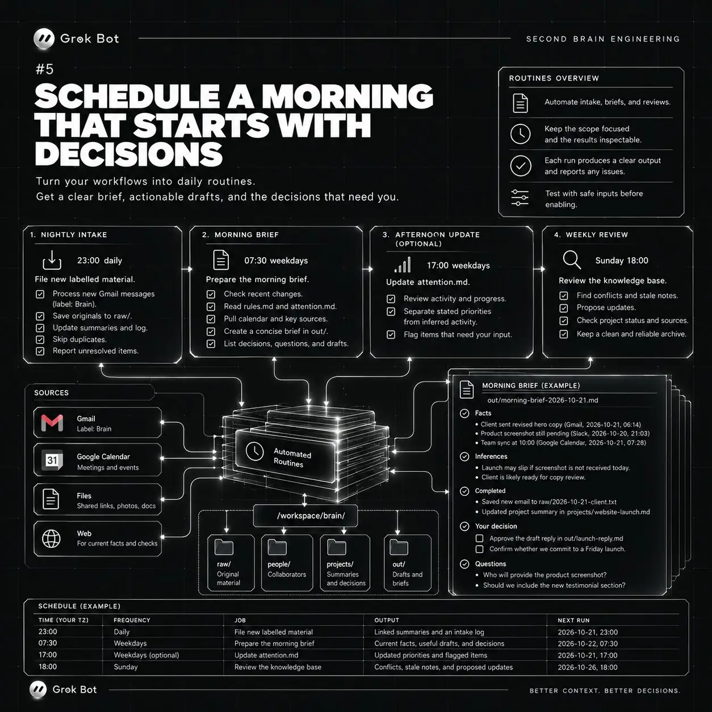
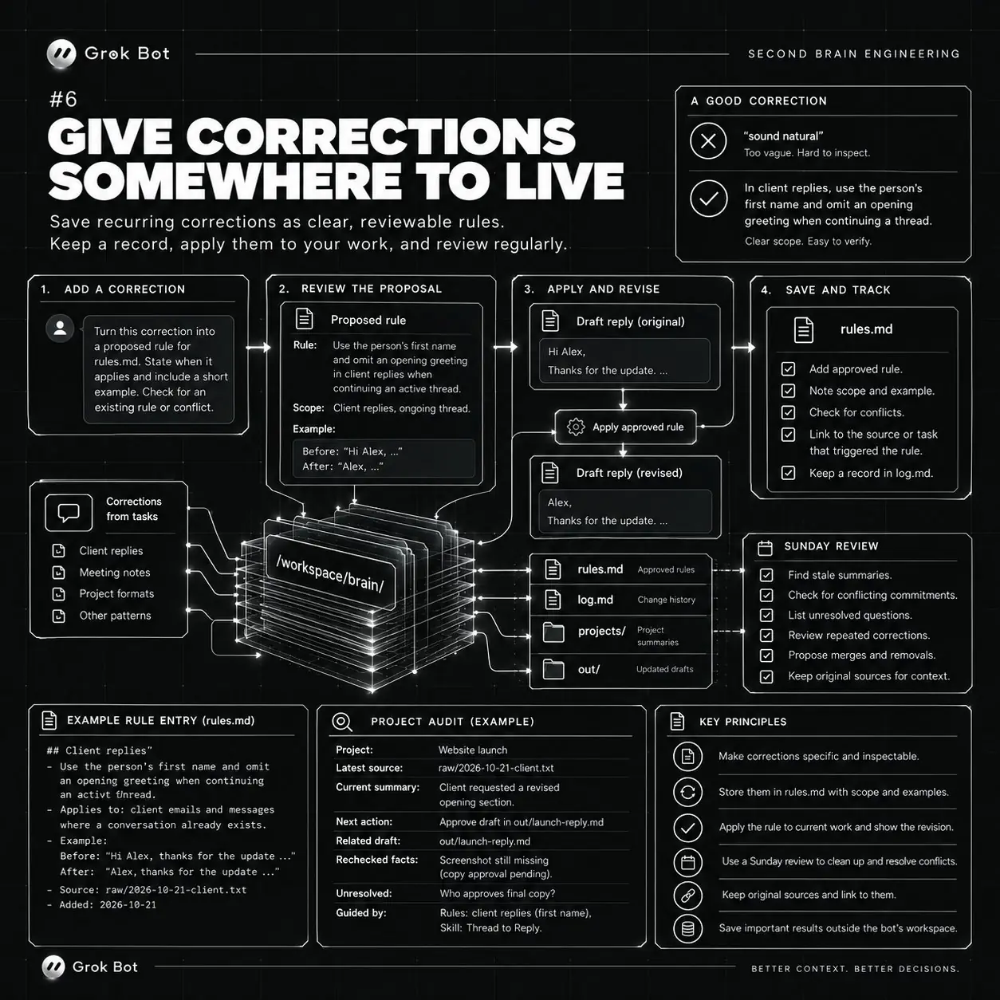

互动数据（2026-10-28 13:30 UTC+8，经 X API 读取）：约 53.7 万次浏览、205 赞、24 转帖、8 引用、44 回复、773 收藏——收藏数约为点赞的 3.8 倍，典型的“先存起来照着做”型教程。
原帖
Andrej Karpathy’s LLM Wiki + Grok Bot
A Second Brain that turns your knowledge into finished work
Put your notes on a night shift before another week slips away
The complete setup and prompts below ↓
Andrej Karpathy 的 LLM Wiki + Grok Bot
一个把你的知识变成成品的“第二大脑”
趁又一周溜走之前，让你的笔记去上夜班
完整搭建步骤和提示词见下 ↓
全文中译：《第二大脑工程：搭一个把笔记变成成品的 Grok Bot》
英文原题 Second Brain Engineering: Build a Grok Bot That Turns Your Notes Into Finished Work。以下为作者本人 X Article 的完整中文翻译。文中的提示词保留英文原文（便于直接粘贴），并在其后附中文译文；配图为原文配图，压缩为 WebP 转载。
把你的项目笔记、几段你自己写的文字样本交给 Grok Bot，再给它一个明确的地方存放产出。然后你就可以提具体的要求：一封带着正确上下文的客户回复、一份上线计划，或者一页“早上等你拍板的决定”。
Grok Bot 运行在一台常驻的云端电脑上，所以定时任务在你合上笔记本后仍能继续。它的文件系统给了这个“第二大脑”一个地方，用来保存每个回答背后的材料。（官方文档：电脑说明）
Andrej Karpathy 在 4 月把它描述为“一个由 AI 替你撰写和维护的知识库”，那条帖子获得了 2,190 万次浏览。一条分享自己搭建版本的帖子有 8.5 万次收藏。
但流行的搭法都跑在笔记本电脑上。收藏最多的那篇教程告诉你“让 Obsidian 保持打开，连接只在应用运行时有效”。
一个真正干活的大脑，需要一台永不合盖的电脑。
Grok Bot 给了它这样一台电脑。它的 AI 助手——叫作 bot——在云端属于自己的电脑上工作，你的笔记本关机时那台电脑仍在运转。
Kevin Rose 已经在上面搭了一个：一个 bot，把他收藏的每条 Instagram 视频索引进一个 Karpathy 风格的 wiki。
1. 给你的大脑一份工作和一个起点

从一件你已经很熟悉的、反复出现的任务开始。给一条项目进展起草回复是个不错的第一次练习，因为事实、语气和下一步行动你都能自己判断。
从 Grok Bot 安装应用，按你账户当前的登录说明操作。
在侧边栏选择 New，然后 Create new Bot。打开 Edit Profile，把它命名为 Brain，并把它的长期职责写进描述里。（官方文档：Bot 设置）
粘贴到 Bot 描述中：
Maintain my second brain in /workspace/brain.
Read INDEX.md and rules.md at the start of a task, then open the relevant files.
Use voice.md when drafting in my name.
Preserve original material in raw/ and link each summary to its sources.
Check changing facts in the current source before using them.
Save drafts and plans in out/ and show me the result.
Ask for approval before sending, publishing, purchasing, deleting, or changing external records.
Report missing access and failed checks clearly.【中译】在 /workspace/brain 维护我的第二大脑。
每个任务开始时先读 INDEX.md 和 rules.md，再打开相关文件。
以我的名义起草时，使用 voice.md。
把原始材料保存在 raw/ 中，每份摘要都链接到它的来源。
使用会变化的事实之前，先在当前来源中核对。
草稿和计划存到 out/，并把结果给我看。
发送、发布、购买、删除或更改外部记录之前，先征求我的批准。
清楚地报告缺失的访问权限和失败的检查。挑选大约二十条你自己写的消息。
里面要包括日常回复、一段项目说明、一个请求和一次纠正，这样样本能覆盖几种不同情境。
删掉任何你不愿意放到 bot 云端电脑上的内容。
文件和已登录的会话在你账户下的所有 Bot 之间共享，所以挑选材料时要考虑到这种账户级的访问范围。（官方文档：共享电脑说明）
把样本作为文本文档附上，或者把消息直接粘贴进 Brain 的对话。
再加一句简短说明，指明这次练习要用的项目。
粘贴在你的写作样本下方：
Create /workspace/brain with raw/, people/, projects/, and out/.
Create INDEX.md, log.md, me.md, voice.md, attention.md, and rules.md.
Preserve the supplied messages in raw/ with their available dates and authors.
Write me.md using only supported facts about my work, current goals, collaborators, and commitments. Mark uncertain details as questions.
Write voice.md with up to 10 specific writing rules. Support each rule with a short line I actually wrote and a link to its saved source.
Leave unsupported details blank.
INDEX.md should map each file to its purpose. Add a dated record of this setup to log.md.
Show me me.md and voice.md for correction before using them in a draft.【中译】创建 /workspace/brain，包含 raw/、people/、projects/ 和 out/。
创建 INDEX.md、log.md、me.md、voice.md、attention.md 和 rules.md。
把我提供的消息连同可得的日期和作者保存到 raw/。
写 me.md 时，只用有依据的事实描述我的工作、当前目标、合作者和承诺；不确定的细节标成问题。
写 voice.md，最多 10 条具体的写作规则；每条规则都用一句我真正写过的短句佐证，并链接到它保存的来源。
没有依据的细节留空。
INDEX.md 要说明每个文件的用途。在 log.md 里加一条带日期的本次搭建记录。
在把 me.md 和 voice.md 用于任何草稿之前，先给我看、让我修正。两个文件都要读。尤其注意“义务”：对一个可能的截止日期的讨论，在总结时很容易变成一个并不存在的承诺。
如果你一开始没有写作样本，可以让 Brain 就你的工作和偏好采访你，一次只问一个问题。
在你提供真实的文字之前，voice.md 都只是暂定版本。
2. 让每条有用的事实都可追溯

这个文件夹应该在你自己打开时也一目了然。
/workspace/brain/
raw/ Original messages, notes, and exports
people/ Working context about collaborators
projects/ Project summaries and decisions
out/ Drafts, plans, and briefs to review
me.md Confirmed background and goals
voice.md Writing guidance with examples
attention.md Current priorities and next actions
rules.md Approved workflow corrections
INDEX.md File map
log.md Dated record of changes【中译】/workspace/brain/
raw/ 原始消息、笔记与导出文件
people/ 关于合作者的工作背景
projects/ 项目摘要与决策
out/ 待审阅的草稿、计划与简报
me.md 已确认的背景与目标
voice.md 附示例的写作指南
attention.md 当前优先事项与下一步行动
rules.md 已批准的工作流修正
INDEX.md 文件地图
log.md 带日期的变更记录让 Brain 在关键论断旁边附上来源链接和“最后核对日期”。一条小笔记就能携带足够的上下文，来回答将来的问题：
Project: Website launch
Source: raw/2026-10-21-client-update.txt
Observed: The client requested a revised opening section.
Status checked: 2026-10-21, 16:20 Europe/London
Open question: Who approves the final copy?【中译】项目：网站上线
来源：raw/2026-10-21-client-update.txt
观察：客户要求修改开头部分。
状态核对：2026-10-21，16:20 Europe/London
待解问题：最终文案由谁批准？这是一条示意记录。请使用你实际材料中的日期、来源和时区。
写作偏好之类的背景信息放在档案文件里。交付日期、会议时间、付款状态和项目归属，只要任务依赖它们的当前值，每次都要重新核对。
Grok Bot 自己的文档也做了同样务实的区分：它的记忆可以保留偏好和摘要，但关于当前状况的回答仍然需要权威来源。（官方文档：记忆）
无法访问的来源应当在回答里留下一个看得见的缺口。比如：“保存的笔记写的是周五；最新的对话串打不开。”这样你就有一件具体的事情去解决。
这里有一条有用的整理规则：原始材料保持原样，然后更新指向它的摘要。
当两个来源互相矛盾时，两个引用都保留，并把冲突标记出来等待审阅。
3. 把一段保存下来的对话变成成品

在接入收件箱或添加定时任务之前，先做这个练习。
附上一段当前项目的对话，以及你自己的粗略笔记。
粘贴到 Brain 的对话中：
Use the attached conversation to prepare my next reply.
Read voice.md, rules.md, and the relevant project file first.
Preserve the new source material in raw/ and update the project summary with source links.
Return:
1. The other person's request in one sentence.
2. Confirmed commitments, with a source for each.
3. Missing information that affects the reply.
4. A concise reply in my voice, saved in out/.
Use current source material for dates, prices, and status.
If a commitment needs my decision, leave it as a clearly marked question outside the draft.
Keep supporting notes separate from the message text.
Show the draft here and leave sending to me.【中译】用附上的对话为我准备下一条回复。
先读 voice.md、rules.md 和相关的项目文件。
把新的来源材料保存到 raw/，并用来源链接更新项目摘要。
返回：
1. 用一句话概括对方的请求。
2. 已确认的承诺，每条附来源。
3. 影响这条回复的缺失信息。
4. 一条用我的口吻写的简洁回复，保存到 out/。
日期、价格和状态以当前来源材料为准。
如果某个承诺需要我来决定，把它作为明确标注的问题放在草稿之外。
辅助笔记与消息正文分开。
草稿在这里给我看，发送留给我。假设对话串在问一个落地页能不能周五上线。
你的笔记里提到还缺一张产品截图，文案也在等待批准。
一个有用的结果会指出这些依赖项，起草一条你可以直接发出的回复，并请你确认是否承诺上线。
你应该能打开每个依赖项背后的证据。
检查四件事：
- 它有没有保留“谁说了什么”？
- 草稿是否回答了对方真正的请求？
- 提议的行动是否与你已经做出的承诺清楚区分？
- 它是否遵守了你批准的写作规则？
修改这份草稿，直到你愿意用它为止。
然后把这个方法保存下来。
批准结果之后粘贴：
Save this reviewed workflow as a private skill called Thread to Reply.
Include the required inputs, relevant brain files, source checks, output location, and approval boundary.
Add the checks we used to review this draft.
For an incomplete thread, ask for the missing context before proposing a commitment.
Show me the saved instructions.【中译】把这个审阅过的工作流保存为一个名为 Thread to Reply 的私有技能（skill）。
包括所需输入、相关的大脑文件、来源核对、输出位置和审批边界。
加上我们审阅这份草稿时用到的检查项。
如果对话串不完整，先索要缺失的上下文，再提出任何承诺。
把保存后的说明给我看。技能（skill）保存的是完成一项任务的方法；例程（routine）决定一个工作流何时运行。
官方建议的顺序是：先完成任务，让流程变得可靠，保存为技能，然后再自动化。（官方文档：技能与例程）
另外两个有用的工作流也适合放进同一个文件夹：
- 会议笔记 —— 成品：一份带负责人、标了日期的行动计划；审阅问题：每位负责人真的接下这项任务了吗？
- 一个保存的想法加来源链接 —— 成品：一份文章大纲或帖子草稿；审阅问题：哪些论断仍需核实？
等你有真实的例子可以审阅时再搭这些。
每个技能都需要自己的验收标准。
4. 建一个你能掌控的“入口”

一个 Gmail 标签让你可以有意识地选择什么进入大脑。把它命名为 Brain，第一次运行时只给几封相关邮件贴上。
打开 Connect apps，找到 Gmail，选择 Add，完成认证。在输入框里键入 @ 来为任务选择已安装的连接器。（官方文档：连接器说明）
初始范围要小到你能逐一检查每条保存的内容。五封邮件就能在分类错误扩散到更大的档案之前把它暴露出来。
选中 Gmail 连接器后粘贴：
Run one intake pass for up to five Gmail messages labelled Brain.
For each message:
- Record its message ID, sender, timestamp, subject, and source link.
- Check whether that ID was already processed.
- Save the original content in raw/ using a stable filename.
- Update the relevant person or project file with a linked summary.
- Put ambiguous items in a review list.
Record processed IDs in intake-state.md only after the source and summary are saved successfully.
Update INDEX.md and log.md.
Return the saved paths, skipped duplicates, and unresolved items.
Keep mailbox contents unchanged.【中译】对贴了 Brain 标签的 Gmail 邮件运行一次入库，最多五封。
对每封邮件：
- 记录它的邮件 ID、发件人、时间戳、主题和来源链接。
- 检查这个 ID 是否已经处理过。
- 用稳定的文件名把原始内容保存到 raw/。
- 用带链接的摘要更新相关的人物或项目文件。
- 把含糊的条目放进待审阅清单。
只有在来源和摘要都成功保存之后，才把已处理的 ID 记入 intake-state.md。
更新 INDEX.md 和 log.md。
返回已保存的路径、跳过的重复项和未解决的条目。
保持邮箱内容不变。对同样的邮件再运行一次。
第二次运行应当识别出已保存的条目，文件夹里不出现重复副本。
当一次被中断的运行从中途恢复时，这项检查就很重要。
你也可以在一天中随时手动给大脑“投喂”。
在 iPhone 上，系统分享面板可以把照片、文件、链接或文字发送到指定的 Grok Bot 对话。
在 Android 上，文档中的分享面板支持目前只覆盖文字。（官方文档：文件与移动端入口）
对于链接，保留原始地址和你保存它的日期。一条有用的笔记还会写明你为什么保留这份材料：“把这个例子用在入门文章里”就给了 bot 一个将来可以与之关联的任务。
5. 安排一个从“决定”开始的早晨

手动入库和草稿都通过审阅之后，再给 Brain 一个简短的日程。以下时间仅为示例，请换成你的时区和工作时间。
| 时间 | 任务 | 预期结果 |
|---|---|---|
| 每天 23:00 | 归档新贴标签的材料 | 带链接的摘要和一份入库日志 |
| 工作日 07:30 | 准备晨间简报 | 当前事实、有用的草稿和待做决定 |
| 周日 18:00 | 回顾知识库 | 冲突、过时笔记和建议的更新 |
还可以加一个可选的工作日 17:00 任务来更新 attention.md。让它区分你明确说过的优先事项，和从邮件、日历事件中推断出来的活动。
在某个项目上花了时间，只是“有活动”的证据。你的优先级清单仍然需要你自己判断。
如果简报需要会议背景，就通过 Connect apps 接入 Google Calendar。然后精确定义早晨要拿到的结果。
粘贴到 Brain 中，替换时区：
Draft a weekday 07:30 morning routine in [YOUR TIME ZONE].
Read rules.md and attention.md, then check the relevant current sources.
Save the brief in out/ and show it in this conversation.
Keep it under 400 words, with these sections only when useful:
Facts: relevant changes, each with a source and check time.
Inferences: possible implications, explicitly labelled.
Completed: files or drafts actually produced, with paths.
Your decision: items waiting for my approval and the exact choice needed.
Questions: missing information that blocks useful work.
Prioritize my confirmed commitments and deadlines.
If nothing changed, stay quiet. If a source check fails, report the failure and affected items.
Show the schedule, next run, sources, and approval boundary before enabling it.【中译】在 [你的时区] 起草一个工作日 07:30 的晨间例程。
先读 rules.md 和 attention.md，再核对相关的当前来源。
把简报保存到 out/，并在本对话中展示。
控制在 400 词以内，以下栏目仅在有用时出现：
事实：相关变化，每条附来源和核对时间。
推断：可能的影响，明确标注为推断。
已完成：实际产出的文件或草稿，附路径。
需你决定：等待我批准的事项，以及需要做的具体选择。
问题：阻碍有效工作的缺失信息。
优先处理我已确认的承诺和截止日期。
如果没有任何变化，就保持安静。如果某个来源核对失败，报告失败和受影响的条目。
启用之前，先展示日程、下次运行时间、来源和审批边界。这个简报结构遵循官方建议：把事实、推断、已完成的操作、待批准事项和未解决的问题分开。（官方文档：结果审阅）
一个好的决定条目是具体的：“批准 out/launch-reply.md 中修改后的开头段落；客户在文案审阅前需要它。”而像“跟进上线”这样的标题，会让你自己去重建任务。
用审阅过的五封邮件工作流创建每晚入库例程，沿用同样的去重检查。它“安静”的状态应当意味着一次成功的检查没有发现新东西；访问失败则应当产生一份看得见的报告。
检查每个例程的下次运行时间，并用安全的输入执行 Test run。（官方文档：例程测试）
6. 给“纠正”一个安身之处

当 Brain 反复犯同一个错误时，保存一条有明确适用范围的纠正。
比如，“听起来自然一点”几乎给不了指引。“在客户回复中，使用对方的名字；在延续进行中的对话串时省略开头问候”描述的则是你能在下一份草稿里检查的东西。
当一条纠正需要延续下去时粘贴：
Turn this correction into a proposed rule for rules.md.
State when it applies and include a short example.
Check for an existing rule that covers the same behavior or conflicts with it.
Show me the proposed change before saving it.
Apply the approved rule to the current artifact and show the revision.【中译】把这条纠正变成一条拟加入 rules.md 的规则。
说明它何时适用，并附一个简短示例。
检查是否已有规则覆盖同样的行为，或与之冲突。
保存之前先把拟议的改动给我看。
把批准后的规则应用到当前产出上，并展示修改后的版本。临时性的要求留在各自的任务里。
某个客户的特殊格式，只有在你打算复用时才应进入通用规则文件。
周日回顾是你检查累积改动的时候。
让它找出过时的项目摘要、相互冲突的承诺、未解决的问题、反复出现的纠正，以及等待下一步行动的有用材料。
让 Brain 以待审阅清单的形式提出合并和删除建议。
在你做决定期间，原始来源保持可用。
你可以用一个简短的审计请求测试整套系统：
Choose one active project in /workspace/brain.
Show its latest source, current summary, next action, and any related draft in out/.
Recheck the facts that could have changed.
List unresolved contradictions and anything you could not verify.
Explain which rule or skill guided the work.【中译】在 /workspace/brain 中选一个进行中的项目。
展示它最新的来源、当前摘要、下一步行动，以及 out/ 中任何相关草稿。
重新核对可能已经变化的事实。
列出尚未解决的矛盾，以及任何你无法核实的内容。
说明是哪条规则或哪个技能指导了这项工作。如果你能顺着这条线索走下去，说明这个系统给了你可以审阅的东西。如果某份摘要丢了来源，就去修正产生它的入库流程或技能。
重要的结果也要保存到 bot 的工作环境之外。文档描述的电脑恢复流程可以从保存的快照恢复，但有可能丢失最近的改动。（官方文档：持久化与恢复）
第一次使用时，完成一个完整循环就停下：加入一个来源，检查保存的摘要，产出一份有用的草稿，然后修正它。把审阅过的工作流保存为技能，再按底层信息变化的频率给它安排日程。
文中引用
- Andrej Karpathy 的原帖《LLM Knowledge Bases》：x.com/karpathy/status/2039805659525644595（2026-04-03 04:42 UTC+8 发布；经 X API 核对，截至 2026-10-28 约 2,200 万次浏览、10.9 万收藏，与文中“2,190 万”相符）。另见其 LLM Wiki gist。
- Kevin Rose 的 Grok Bot 搭建：x.com/kevinrose/status/2101455244567973976（2026-09-20 发布）——“完全离线的已收藏 Instagram 视频索引，Karpathy wiki 风格的 .md”，用到 Grok Voice Transcribe 2.0、Grok Vision 等。
- 文中链接的 Grok Bot 官方文档（2026-10-28 均可访问）：x.ai/bot · Get started · Bots · Computer and apps · Files and results · Skills, routines and automations。正文中“（官方文档：……）”是原文行内链接的位置，X API 未返回各锚文本与 URL 的一一对应，故集中列于此处。
评论区
截至 2026-10-28，作者本人没有在该对话串中补充回复（按 conversation_id + from:tsukiema_ 检索，只返回主帖本身）。约 44 条回复里，绝大多数是读者 @ Grok Bot 官方账号说“对照我现有的做法审一遍，给我一个改进计划”，随后 @bot 回复“已发送到你的 Grok Bot”——帖子本身成了一个把教程“转交给自己的 bot”的入口。其余值得一提的：
- @flapsandwich 问能否用它整合散落在多个应用、跨越多年的资料；@grok 回答建议从少量关键样本起步，每条论断都链接到来源和日期。
- @aryanvij02 推荐了另一款“模型无关、自动维护第二大脑”的产品 Turnstone（myturnstone.ai）——属于评论区自荐/推广，本站未评估。
核实与读后注记
- 已核实：Karpathy 帖子的浏览量；Kevin Rose 帖子存在且内容与文中描述一致；文中所有官方文档链接可访问。
- 未核实：“一条分享搭建版本的帖子有 8.5 万次收藏”“收藏最多的教程要求保持 Obsidian 打开”——原文未给链接，本站未找到对应来源。
- 这是什么、不是什么：它不是一个开源项目或代码仓库，没有可下载的代码；“产品”就是 Grok Bot 本身，可复用的部分是一套目录约定和 10 段提示词。Gmail、Google Calendar 连接器、iPhone/Android 分享面板、Test run、快照恢复等功能描述来自作者对官方文档的转述，以官方文档当前版本为准。
- 方法上的亮点：“先手动做一次 → 人工审阅 → 存成技能 → 再定时”；把“讨论过的截止日期”与“已做出的承诺”严格分开；来源失效要在回答里留下可见的缺口；入库按 ID 去重、只在保存成功后记账，保证中断后可安全重跑。这些与 Karpathy 原帖中的 raw/ → wiki 编译、lint 健康检查一脉相承，又补上了“审批边界”和“定时运行”两块。
- 需要留意：文中提醒，同一账户下所有 Bot 共享文件与已登录会话——放进 raw/ 的材料对账户内其他 bot 同样可见。
附录：英文原文
展开英文原文（作者本人 X Article 全文，提示词按原文位置插回）
Second Brain Engineering: Build a Grok Bot That Turns Your Notes Into Finished Work
Give Grok Bot your project notes, a few examples of your writing, and a clear place to save its work. You can then ask for something concrete: a client reply with the right context, a launch plan, or a morning page of decisions waiting for you.
Grok Bot runs on a persistent cloud computer, so scheduled work can continue while your laptop is closed. Its files give this second brain somewhere to keep the material behind each answer. Official computer documentation
Andrej Karpathy described it in April as a knowledge base that an AI writes and keeps for you, and his post drew 21.9 million views. one post sharing a build of it has 85,000 bookmarks.
but the popular builds live on a laptop. the most saved guide tells you to "leave Obsidian open, the connection only works while the app is running."
a brain that does the work needs a computer that never closes.
Grok Bot gives it one. its AI helpers, called bots, work on a computer of their own in the cloud, and that computer keeps going while your laptop is shut.
Kevin Rose already built one there: a bot that indexes every Instagram video he saved into a Karpathy style wiki.
1. Give your brain a job and a starting point
Start with one recurring task you already understand. Drafting a reply to a project update is a useful first exercise because you can judge the facts, tone, and next action yourself.
Install the app from Grok Bot and follow the current sign-in instructions for your account.
In the sidebar, choose New, then Create new Bot. Open Edit Profile, name it Brain, and put its lasting responsibilities in the description. Bot setup documentation
Paste into the Bot description:
Maintain my second brain in /workspace/brain.
Read INDEX.md and rules.md at the start of a task, then open the relevant files.
Use voice.md when drafting in my name.
Preserve original material in raw/ and link each summary to its sources.
Check changing facts in the current source before using them.
Save drafts and plans in out/ and show me the result.
Ask for approval before sending, publishing, purchasing, deleting, or changing external records.
Report missing access and failed checks clearly.Choose about twenty messages you wrote.
Include ordinary replies, a project explanation, a request, and a correction so the sample contains several situations.
Remove anything you are uncomfortable placing on the bot's cloud computer.
Files and signed-in sessions are shared across the Bots on your account, so choose the material with that account-wide access in mind. Shared computer details
Attach the sample as a text document, or paste the messages into the Brain conversation.
Add a short note naming the project you want to use for the exercise.
Paste below your writing sample:
Create /workspace/brain with raw/, people/, projects/, and out/.
Create INDEX.md, log.md, me.md, voice.md, attention.md, and rules.md.
Preserve the supplied messages in raw/ with their available dates and authors.
Write me.md using only supported facts about my work, current goals, collaborators, and commitments. Mark uncertain details as questions.
Write voice.md with up to 10 specific writing rules. Support each rule with a short line I actually wrote and a link to its saved source.
Leave unsupported details blank.
INDEX.md should map each file to its purpose. Add a dated record of this setup to log.md.
Show me me.md and voice.md for correction before using them in a draft.Read both files. Pay particular attention to obligations: a discussion about a possible deadline can easily become a false commitment during summarization.
If you are starting without writing samples, ask Brain to interview you about your work and preferences, one question at a time.
Keep voice.md provisional until you supply real writing.
2. Make every useful fact traceable
The folder should be easy to understand when you open it yourself.
/workspace/brain/
raw/ Original messages, notes, and exports
people/ Working context about collaborators
projects/ Project summaries and decisions
out/ Drafts, plans, and briefs to review
me.md Confirmed background and goals
voice.md Writing guidance with examples
attention.md Current priorities and next actions
rules.md Approved workflow corrections
INDEX.md File map
log.md Dated record of changesAsk Brain to include a source link and a last-checked date beside consequential claims. A small note can carry enough context to answer a future question:
Project: Website launch
Source: raw/2026-10-21-client-update.txt
Observed: The client requested a revised opening section.
Status checked: 2026-10-21, 16:20 Europe/London
Open question: Who approves the final copy?This is an illustrative record. Use the date, source, and time zone from your actual material.
Keep background such as writing preferences in the profile files. Recheck delivery dates, meeting times, payment status, and project ownership whenever the task depends on their current value.
Grok Bot's own documentation makes the same practical distinction: its memory can retain preferences and summaries, while current answers still need authoritative sources. Memory documentation
An inaccessible source should leave a visible gap in the answer. For example: “The saved note says Friday; the latest thread could not be opened.” That gives you something specific to resolve.
There is one useful housekeeping rule here: keep original material intact, then update the summary that points to it.
When two sources disagree, retain both references and mark the conflict for review.
3. Turn one saved conversation into finished work
Run this exercise before connecting an inbox or adding schedules.
Attach a current project conversation and your own rough notes.
Paste into the Brain conversation:
Use the attached conversation to prepare my next reply.
Read voice.md, rules.md, and the relevant project file first.
Preserve the new source material in raw/ and update the project summary with source links.
Return:
1. The other person's request in one sentence.
2. Confirmed commitments, with a source for each.
3. Missing information that affects the reply.
4. A concise reply in my voice, saved in out/.
Use current source material for dates, prices, and status.
If a commitment needs my decision, leave it as a clearly marked question outside the draft.
Keep supporting notes separate from the message text.
Show the draft here and leave sending to me.Suppose the thread asks whether a landing page can go live on Friday.
Your notes mention a missing product screenshot and pending copy approval.
A useful result identifies those dependencies, drafts a response you could send, and asks you to confirm the launch commitment.
You should be able to open the evidence behind each dependency.
Check four things:
Did it preserve who said what?
Does the draft answer the actual request?
Are proposed actions clearly separated from promises you already made?
Does it follow the writing rules you approved?
Correct the existing draft until you would use it.
Then save the method.
Paste after approving the result:
Save this reviewed workflow as a private skill called Thread to Reply.
Include the required inputs, relevant brain files, source checks, output location, and approval boundary.
Add the checks we used to review this draft.
For an incomplete thread, ask for the missing context before proposing a commitment.
Show me the saved instructions.A skill stores the method for a task; a routine determines when a workflow runs.
The official guidance recommends completing a task, making the process reliable, saving the skill, and then automating it. Skills and routines documentation
Two other useful workflows fit the same folder:
Meeting notes
Finished artifact: A dated action plan with owners
Review question: Did each owner actually accept the task?
A saved idea and source links
Finished artifact: An article outline or post draft
Review question: Which claims still need verification?
Build these when you have a real example to review.
Each skill needs its own acceptance criteria.
4. Create an intake you can control
A Gmail label gives you a deliberate way to choose what enters the brain. Call it Brain and apply it to a few relevant messages for the first run.
Open Connect apps, find Gmail, choose Add, and complete authentication. In the composer, type @ to select the installed connector for the task. Connector instructions
Keep the initial scope small enough to inspect every saved item. Five messages can reveal a classification mistake before it spreads through a larger archive.
Paste with the Gmail connector selected:
Run one intake pass for up to five Gmail messages labelled Brain.
For each message:
- Record its message ID, sender, timestamp, subject, and source link.
- Check whether that ID was already processed.
- Save the original content in raw/ using a stable filename.
- Update the relevant person or project file with a linked summary.
- Put ambiguous items in a review list.
Record processed IDs in intake-state.md only after the source and summary are saved successfully.
Update INDEX.md and log.md.
Return the saved paths, skipped duplicates, and unresolved items.
Keep mailbox contents unchanged.Run it again against the same messages.
The second run should identify the saved items and leave the folder free of duplicate copies.
That check matters when an interrupted run resumes halfway through
You can also feed the brain manually throughout the day.
On iPhone, the system share sheet can send a photo, file, link, or text into a chosen Grok Bot conversation
On Android, the documented share-sheet support currently covers text. File and mobile intake documentation
For links, keep the original address and the date you saved it. A useful note also says why you kept the material: “Use this example in the onboarding article” gives the bot a future task to connect it to.
5. Schedule a morning that starts with decisions
After the manual intake and draft both pass review, give Brain a short schedule. These are example times; replace them with your time zone and working hours.
23:00 daily
Job: File new labelled material
Expected result: Linked summaries and an intake log
07:30 weekdays
Job: Prepare the morning brief
Expected result: Current facts, useful drafts, and decisions
Sunday 18:00
Job: Review the knowledge base
Expected result: Conflicts, stale notes, and proposed updates
An optional 17:00 weekday pass can update attention.md. Ask it to distinguish your stated priorities from activity inferred from messages and calendar events.
Time spent on a project is evidence of activity. Your priority list still needs your judgment.
Connect Google Calendar through Connect apps if the brief needs meeting context. Then define the morning result precisely.
Paste into Brain, replacing the time zone:
Draft a weekday 07:30 morning routine in [YOUR TIME ZONE].
Read rules.md and attention.md, then check the relevant current sources.
Save the brief in out/ and show it in this conversation.
Keep it under 400 words, with these sections only when useful:
Facts: relevant changes, each with a source and check time.
Inferences: possible implications, explicitly labelled.
Completed: files or drafts actually produced, with paths.
Your decision: items waiting for my approval and the exact choice needed.
Questions: missing information that blocks useful work.
Prioritize my confirmed commitments and deadlines.
If nothing changed, stay quiet. If a source check fails, report the failure and affected items.
Show the schedule, next run, sources, and approval boundary before enabling it.The brief structure follows the official recommendation to separate facts, inferences, completed actions, pending approval, and unresolved questions. Result review documentation
A good decision item is specific: “Approve the revised opening paragraph in out/launch-reply.md; the client needs it before the copy review.” A heading such as “Follow up on launch” leaves you to reconstruct the task.
Create the nightly intake routine from the reviewed five-message workflow, using the same duplicate checks. Its quiet state should mean a successful check found nothing new; failed access should produce a visible report.
Review each routine's next run and use Test run with safe inputs. Routine testing documentation
6. Give corrections somewhere to live
When Brain makes a recurring mistake, save a correction with a clear scope.
For example, “sound natural” gives little guidance. “In client replies, use the person's first name and omit an opening greeting when continuing an active thread” describes something you can inspect in the next draft.
Paste when a correction should carry forward:
Turn this correction into a proposed rule for rules.md.
State when it applies and include a short example.
Check for an existing rule that covers the same behavior or conflicts with it.
Show me the proposed change before saving it.
Apply the approved rule to the current artifact and show the revision.Keep temporary requests attached to their task.
A special format for one client should enter the general rule file only if you intend to reuse it.
The Sunday review is where you inspect accumulated changes.
Ask for stale project summaries, conflicting commitments, unresolved questions, repeated corrections, and useful material waiting for a next action.
Have Brain propose merges and removals as a review list.
Keep the original sources available while you decide what to change.
You can test the whole setup with a short audit request:
Choose one active project in /workspace/brain.
Show its latest source, current summary, next action, and any related draft in out/.
Recheck the facts that could have changed.
List unresolved contradictions and anything you could not verify.
Explain which rule or skill guided the work.If you can follow that trail, the system is giving you something reviewable. If a summary has lost its source, fix the intake or skill that produced it.
Save important results outside the bot's working environment as well. The documented computer recovery process can restore from a saved snapshot, with a possibility of losing very recent changes. Persistence and recovery details
For your first session, stop after one complete cycle: add a source, inspect the saved summary, produce a useful draft, and correct it. Save the reviewed workflow as a skill, then give it a schedule that matches how often the underlying information changes.
英文原文经 X API 读取（article.plain_text + code 实体），段落按原文顺序；原文中的行内链接锚文本保留为纯文字，配图见上方中译部分。